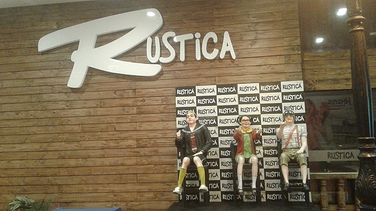

Algunas características del niño del barril:
- Era pobre.
- Nunca se supo su verdadero nombre.
- Declaraba vivir en el departamento 8 con un supuesto cuidador que nunca apareció en cámara, aunque en varias ocasiones se lo veía dormir dentro del barril.
- Tenía hambre constantemente. Su comida preferida eran las "tortas de jamón".
- Personaje más popular de entre las creaciones del conocido comediante "Chespirito", se ganó el corazón de toda Latinoamérica.
"El heroísmo no consiste en carecer de miedo, sino en superarlo."
Si querés saber más sobre nuestro amigo del barril, podés leer sobre los personajes principales de la serie en la página de reparto.